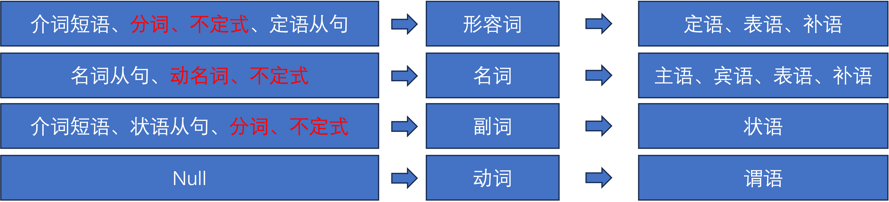

一、Morphology（词性）
了解词性的目的是为了将来清楚哪些词性的词可以在句子中充当哪些成分。背单词时一定要注意同时记住词性。词性中最重要的是四种：名词、动词、形容词、副词，其他的代词、冠词、介词等都属于辅助词性，最终都要结合其他结构共同构成名词、形容词或副词（一般构成不了动词，动词就是一词一意）。
1. 名词（Noun）
名词的概念无需多解释，字典里标 noun. 的就是名词。
🧠 虽然动名词（gerund）和现在分词（present participle）形式都是“动词+ing”，形式一样，且都属于非谓语动词（不能做谓语，包括不定式、动名词/现在分词、过去分词），很难区分（比如swimming，又可以是动词 swim 的现在分词，也可以看做是它的动名词）。但是有个本质的区别：动名词是做名词用的，具有名词的所有特征，可以做主语(subject)、宾语(object)，或者与介词构成介宾结构，它可以用一个代词或者名词替换（it/something），意思不变。例如：
① Swimming is my favorite hobby.
② I enjoy reading books.
③ She is good at dancing.
而现在分词(present participle)在句中可以作为形容词，用来修饰名词；还可以构成现在时态，表示一种ongoing的动作，它不可以被名词或者代词替换（即不可用 it/something 来替换 doing）。例如：
① The running water is cold.
② The crying baby woke everyone up.
③ She is singing beautifully.
判断方法一（替换法）:如果是介词的话，那么将to换成 in/on 其实意思不会有太大变化，如果是不定式的话，意思就完全变了。例如：
① I’m used to getting up early. → I’m used to / in getting up early.（句子依然通顺合理，所以 to 就是介词。）
② I want to go. → I want in go.（句子不通畅了，所以 to 就是不定式。）
判断方法二（经验法）：如果 to 是紧跟在动词之后使用的，可以看前面的动词，如果动词是不及物动词，那么就需要 ”介词+doing“ 的形式来连接宾语；如果是及物动词的话，那大概率是用 “to do”，因为动词后面的词通常用来表示目的，正好契合 to do 的内涵。如果介词前面是固定短语/形容词/名词（如look forward, be used, pay attention, object）时，这个时候大概率就要用“to doing”了。
判断方法三（看目的）：如果表示一种目的/将来/未发生的，就用不定式 to do。例如：I stopped to buy a drink. 表方式/对象/已存在的动作，就用 to + doing。例如：I’m used to living here.
使用方法：在说英语的时候如果能快速判断用 to do 还是 to doing 呢？
🤷🤷🤷🤷，目前我也不知道，可能只能靠语感，只能说遵循一个大原则，如果知道自己说的动词是不及物动词，那就要用 to doing，如果是及物动词，就用 to do，如果不是用在动词之后，就用 to doing。
⚠️Tips：几组意思完全不同的搭配 ① stop：
stop to do：停下来去做另一件事。例如：He stopped to smoke.（停下手里的事去抽烟）
stop doing: 停止做某事。例如：He stopped smoking.（戒烟了）
② remember：
remember to do：记得要去做（未做）。例如：Remember to lock the door.
remember doing：记得做过（已做）。例如：I remember locking it.
③ forget：
forget to do：忘记要去做。I forgot to post the letter.
forget doing：忘记做过。I forgot posting it.
为什么会有一个单词后接 to do 和 doing，意思完全不同的情况呢？这和非谓语动词的时间属性有关，to do 和 doing 都是非谓语动词，但是 to do 具有指向未来、未发生的事的属性；而 doing 具有指向过去、已发生的事的属性，而forget、remember、stop三个单词都是“时间/记忆/动作状态”相关的词，搭配上不同的非谓语动词就开始分裂了。
2. 动词（Verb）
2.1 谓语动词（Predicate Verb）
谓语动词没什么好解释的。按照可不可以直接接宾语可以分为：及物动词、不及物动词和不完全及物动词。及物动词和不及物动词没什么好解释的；不完全及物动词的常用的就是使役动词，它在接不定式作为宾语时需要省掉 to，因为它的意思里面已经有了“使”的意思了。
2.2 情态动词（Modal Verb）
表示语气的单词，本身有一定的词义，它表示的是情感的程度、可能性的大小等。但是情态动词不能独立作谓语，只能和动词原形一起构成谓语（所以也有人将情态动词称为情态助动词）。情态动词用在行为动词前，表示说话人对这一动作或状态的看法或主观设想。行为动词表示的是可以通过行为来表达的动作(如写，读，跑)，而情态动词只是表达的一种想法(如能，也许，敢)，常见的情态动词有: can (could)、may (might)、must、need、ought to（ought几乎不会单独使用，后面一定跟to再接动词原形）、dare (dared)、shall (should)、 will (would)。
② could、might、should、would、ought to不只是简单的分别是 can、may、shall、will 的过去式那么简单，他们各自也有各自的意思，我会在另一篇文章中再详细解释。
2.3 助动词（Auxiliary Verb）
助动词用来构成时态和语态，也可构成疑问句和否定句，构成否定句时与否定副词not连用。具有语法意义，不可单独作谓语。它没有对应的汉译，必须和实义动词一起组成谓语动词。常用的助动词有:be、have/has、do/does/did、got等。
3. 形容词（Adjective）
形容词就是用来限定名词的，也就是给名词添加属性的，如：beautiful wxy就给 wxy 增加了 beautiful 这个属性。
4. 副词（Adverb）
副词就是用来限定谓语动词的，也就是给谓语动词添加语气的。如：speak loudly，就给speak这个动作添加了loudly这个语气。
5. 代词（Pronoun）
代词就是指代人/物/所属的词，代词分类主要包括：
- 形容词性物主代词（限定词的一类，类似于形容词的用法）：your、her、his、its、their
- 名词性物主代词：yours、mine、his、hers、its、ours、theirs
- 人称代词：I、you、it、he、she
- 反身代词：myself、yourself、himself
- 指示代词：this、that、these、those
- 疑问代词：who、what、which、where
- 不定代词：some、any、none
- 相互代词：each other（each other并不是两个代词的组合）、one another
- 不定代词：some、any、none
- 连接代词（引导名词性从句）：how、when、where
- 关系代词（引导定语从句）：that、which、who、whom、whose、as
6. 冠词（Article）
冠词简单，分为定冠词和不定冠词，定冠词包括 the， 不定冠词包括 a 和 an。
7. 数量词（numeral）
数量词没什么好说的，one、two、three、four…
8. 介词（Preposition）
介词是英语中非常非常非常难以用常规去理解的词，经常需要结合上下文来理解。常见的介词有：in、on、up、upon、at、to、with、toward、around、as、like、until…，介词后面只能接名词结构。
9. 连词（Conjunction）
连词更多的是死记硬背意思和用法。常见的连词有：though、although、and、or、but、either、neither、until等。很多连词可以用来构成状语从句。
💡 instead of...
💡 either...or...
💡 neither...nor...
二、Sentence Elements（句子成分）
了解了词性之后，就要讨论这些词性在句子中可以充当哪些成分了。在英语句子中，总体有7种句子成分，分别是：主语、谓语、宾语、表语、定语、状语、补足语、同位语、及独立成分。他们可以组成英语中的 7 种基本句型：
① 主语（subject）+ 谓语（verb） 这里的谓语指的是不及物动词intranstive verb
② 主语（subject）+谓语（verb）+ 宾语（object） 这里的谓语若指的是及物动词 transtive verb，那么可以直接接宾语，如果谓语指的是不及物动词，那么需要一个介词来连接方可后接宾语
③ 主语（subject）+ 系动词（linking verb）+表语（predicative）
④ 主语（subject）+ 谓语（verb）+ 间接宾语（indirect object）+ 直接宾语（direct object）
⑤ 主语（subject）+ 谓语（verb）+ 宾语（object）+ 补语（complement）
⑥ 主语（subject）+ 谓语（verb）+状语（adverb）
⑦ 主语（subject）+ 谓语（verb）+ 宾语（object）+状语（adverb）
以上的 7 种句型如果单独出来组成一句话其实很简单（简单句），就算好多句话并列在一起也还是只是简单并列句，只要根据组成句子的单词的词性分析出各个句子的成分就行，unfortunately，不会这么简单，经常见到的是带有各种从句的复合句，但是复合句也是有规律可循的，实际上从句也只是充当这 7 个句型里的某个成分而已。
接下来解决掉哪些词性可以当哪些成分的问题？这个问题是建立语法框架的关键，因为英语中绝大部分的句子都是由“四大词性”和“七类辅助”（介词短语、三类从句<名词性从句、定语从句、状语从句>、三类非谓语动词<动名词、分词、不定式>）所组成的。而在应用这七类辅助结构时，事实上是将它们当作四大词性中的一类来使用的，如下图所示：

Fig. 七类辅助结构、四大词性、句子成分关系图
三、Tense（时态）
时态是掌握英语语气的核心，通过时态可以理解动作所蕴含的逻辑关系和语义情感色彩。时即动作的时间，按现在时间点为参考坐标分为现在、过去、将来、过去将来；态即动作的状态，分为一般式、进行式、完成式、完成进行式，总共可以组合出下图所示的 16 种时态。

Fig. 16 种时态图
1、一般时态
（1）一般现在时（do）：除了表示经常发生的动作外，一般现在时还可以用来表示客观事实。例如：
① Light travels more quickly than sound.
② Light doesn't travel more quickly than sound.
（2）一般过去时（did）：表示站在过去的时间点所发生的动作。例如：
① I used the pen before.
② I didn't use the pen before.
③ Did I use the pen before?
（3）一般将来时（will do）：表示从现在的时间点看某个将来的时间点会发生的动作。例如：
① She will live in HeFei.
② She won't live in HeFei.
③ Will she live in HeFei?
（4）一般过去将来时（would do）：从过去（past）的某个时间点（相对于现在的时间点来说）看将来要发生的动作。例如：
① She told me that she would go back to HeFei.
② She told me that she wouldn't go back to HeFei.
③ Did she tell me that she would go back to HeFei?
2、进行时态
（1）现在进行时（am/is/are doing）：站在现在的时间点表示现在正在进行的动作（动作在说的时候是还在持续的）。例如：
① I am playing tennis now.
② I am not playing tennis now.
③Am i playing tennis now?
（2）过去进行时（was/were doing）：表示在某个过去的时间点或时间段正在进行的动作。例如：
① They were watching TV when a stranger suddenly rushed in.
② They weren't wathching TV when a stranger suddenly rushed in.
③ Were they watching TV when a stranger suddenly rushed in?
（3）将来进行时（will be doing）：站在将来的某个时间点正在进行的动作（这类动作一般是事先计划好的，而且一定会发生的）。例如：
① We will be flying at 30 000 feet in five minutes.
② We won't be flying at 30 000 feet in five minutes.
③ Will we be flying at 30 000 feet in five minutes?
（4）过去将来进行时（would be doing）：站在某个过去的时间点，从这个时间点看一个之后的时间点（或时间段）正在发生的动作。例如：
① I knew that She would be living in China next month.
② I knew that She wouldn't be living in China next month.
③ Did I know that She would be living in China next month?
3、完成时态
（1）现在完成时（have/has done）：处在现在这个时间点，描述过去的动作对现在状态的影响（现在完成时态用于表示过去发生的动作与现在的关系，通常强调动作的持续性或过去的动作对现在的状态）。例如：
① I have spent all of my money.（这里的“spent”表示过去发生的动作，但其产生的影响“没有钱”一直持续到现在）
② I have studied English for five years.（这句话强调了学习英语的过程从过去持续到现在，并且可能暗示说话者在这段时间内积累了相应的知识和技能。）
③ I have played basketball.（这句话强调了说话者的经历，可能暗示说话者在某个时间点之前有过打篮球的经历，并且这个经历对现在仍然有影响。）
④ I haven't played basketball.
⑤ Have I played basketball?
（2）过去完成时（had done）：站在某个过去的时间点，描述过去的动作或状态对现在（指过去的时间点）的状态的影响。例如：
① I had cleaned my room when she came in.
② I hadn't cleaned my room when she came in.
③ Had I cleaned my room when she came in?
（3）将来完成时（will have done）：站在某个将来的时间点，对这个时间点之前的一个或一系列动作的总结。（一般需要一个未来的时间点作为上下文提示，不然单独用will have done 有点突兀）。例如：
① By July, Michael will have got two college degrees.
② By July, Michael won't have got two college degrees.
③ By July, will Michael have got two college degrees?
（4）过去将来完成时（would have done）：站在某个过去的时间点，对一个将来某时某刻已经发生了的动作做总结。例如：
① He said he would have left for London by the end of next month.
② He said he wouldn't have left for London by the end of next month.
③ Did he say he would have left for London by the end of next month?
The ship had set off. 🙅
Michael will have got two college degrees.🙅
4、完成进行时态
（1）现在完成进行时（have/has been doing）:站在现在的角度，对一个从过去某一时间开始，一直持续到现在，或者刚刚终止，并强调这个动作会继续下去。例如：
① Tom has been playing football for two hours.
② Tom hasn't been playing football for two hours.
③ Has Tom been playing football for two hours?
（2）过去完成进行时（had been doing）：站在某个过去的时间点，对这个时间点正在进行动作的总结。例如：
① I had been cleaning my room the whole morning when she came.
② I hadn't been cleaning my room the whole morning when she came.
③ Had I been cleaning my room the whole morning when she came?
（3）将来完成进行时态（will have been doing）：站在某个将来的时间点，对这个时间点正在进行动作的总结。例如：
① I will have been doing the drawing for five hour at 11 pm.
② I will have been cleaning my room for 4 hours when she comes.
③ We were hoping they would have been waiting for us at the airport.
④ We were hoping they wouldn't have been waiting for us at the airport.
⑤ Were we hoping they would have been waiting for us at the airport?
（4）过去将来完成进行时态（would have been doing）：站在过去的某个时间点，对一个之后的时间点正在发生的动作做总结。例如：
① I knew by August she would have been working there for 3 years.
虚拟语气并不是一种特定的结构，而是一种语气，虚拟语气表达两层意思：① 不真实或者想象的情景，即表述“事与愿违”（这种一般用在过去， past subjunctive）; ② 建议、命令、需求（这种一般用在现在时态，present subjunctive）。英语中为了表达出这样的语气但又不和其他语气冲突，对语法做了一点微调。下面分别讲解：
一、第一种类型——“事与愿违”
这种主要是表达现在的结果是事与愿违，表达出一种后悔遗憾的感觉。可以表达出这种意思的虚拟语气方式很多，里面细分的情形比较多：
（一）最常用的——“if”句
“if”句也分很多种类型，与现在相反、与过去相反、与将来相反。句型结构是：“if 句，结果句”下面分情况写：
（1）与现在相反
如果是 “if” 句且是“subject + linking verb + predicative”句型的虚拟语气，不管 “if” 句中的主语是啥（I, you, she, he, it, we, they）通通用 were 作为 “谓语动词” ；如果是“subject + predictive verb + object”句型的虚拟，通通用过去式（did），后面的结果句一般用“would/could/should/must + verb”。如：
① If I were rich, I would buy a big house. 真实意思是我冇钱。
② If she were here, she would help us.
③ If he knew the answer, he would tell you.
④ If you studied harder, you would get better grades.
（2）与过去相反
此时，“subject + linking verb + predicative”句型的虚拟语气，不管 “if” 句中的主语是啥，通通用过去完成时（had been/done），后面的结果句用现在完成时（would/could/should/must + have+done）；如果是“subject + predictive verb + object”句型的虚拟，通通用过去完成时（had done），后面的结果句一般用现在完成时（would/could/should/must + have + done）。
① If you had told me earlier, I would/could/should/must have helped you.
(3) 与将来相反（可能性极低，有点像那种如果明天太阳从西边出来，我就会xxxx）
此时，If 句一般有三种（If I should do / If sb verb-ed（动词过去式）/were / If sb were to do）， 结果句一般“sb + would/could/should/must + do”。
① If it should rain tomorrow, we would cancel the trip.
② If it were to rain tomorrow, we would cancel the picnic.(明天下雨的可能性极小，因此用“were to”强调非现实性)
🙋：如果将上面if句的 should 改成 could/would 可以吗？
🧠 其实是不行的，因为should 表示“应该”，承载了“偶然性”“意外性”“低概率事件”的语义色彩，是英语中对“非现实将来”的委婉标记，它蕴含了说话者对事件发生的主观低预期性，可能性极低但非完全排除，可以翻译为“万一发生”。而could在英语语义中的可能性比较强，表示“有潜在可能性”，如果if句用could表达不出来基本没办法发生，消解了虚拟性，同理，would 是“意愿”或“结果”标记，也不能用于“if条件句”本身。再同理，were to 表示“计划性但及不可能”，符合虚拟的语义。
（二）含蓄条件
1、采用“or/otherwise/but”等并列词含蓄构成
这种就是通过上下文理解虚拟的语气，通过并列词连接两个分局，前一分句陈述事实，后一分句用虚拟语义暗示“如果不这样，就会出现某种相反结果”。如：
① I was busy yesterday, otherwise I would have helped you.
② You should finish your homework now, or you would be punished by the teather.
2、采用介词短语（如“without/but for/under”）含蓄表达
介词短语直接替代“if条件句”，表达“没有……”“要不是……”“在……情况下”等假设，常见介词/短语：without（没有）、but for（要不是）、under such circumstances（在这种情况下）、in the absence of（缺乏）等。如：
① Without your help, I couldn't have finished the work on time.
② But for the bad weather, we would go hiking this weekend.
3、动词不定式（常用“to do/otherwise to...”）表示含蓄条件
动词不定式短语暗示“要想……就必须……”“如果要……就会……”的假设条件，不定式本身表目的或条件，主句用虚拟语气表达结果。如：
① To pass the exam, you should have studied harder last month.
② To win the competition, you would have to pratice more.
4、用比较级（"than/what if.."）含蓄表达
通过比较级结构暗示“如果……就会更……”的假设，常见句式：“主语 + 谓语 + 比较级 + than + 隐含条件”“What if…（如果……会怎样）”。如：
① I would have done better than him if I had tried.
② What if we should catch the early bus tomorrow? We would arrive on time.
5、省略从句通过上下文暗示（此时很可能变成“过去将来完成时”）
直接省略“if条件句”，假设条件通过上下文（如对话、场景）暗示，主句直接用虚拟语气表达结果，需结合语境判断假设的时间。如：
① A: I failed the interview.（我面试失败了。）B: You could have prepared more.（你本可以多准备一下的。） 上下文暗示条件“if you had prepared more”，与过去事实相反，用“could have + 过去分词（prepared）”。
② I would go with you, but I have a meeting. 转折连词“but”后的事实暗示条件“if I didn’t have a meeting”，与现在事实相反，主句用“would + 动词原形（go）”。
二、第二种类型——建议命令需求
这种情况下的虚拟语气用来表示“a suggestion, a recommendation, a demand, or something that is desired or required but not yet done”。这种虚拟情况的句子特征是现在时态，而且要用动词原形，哪怕是跟在 he/she/it 后面。例如：
① I suggest that he go to school, 正常来讲应该是: He goes to school.
② It's important that she be on time, 正常来讲应该是： She is on time.
③ I suggest that you study harder, 正常来讲应该是: you study harder.
④ He insists that she tell the truth, 正常来讲应该是： she tells the truth.
⑤ It is necessary that everyone be quiet during the test, 正常来讲应该是： Everyone is quiet during the test.
以上这几个例子都是表示对未来的建议、命令、需求等，现在还没有发生。
四、从句（Subordinate Clause）
英语中的句子分为两类，一类是独立句（independent clause），可以完整表达意思；另一种是非独立句（dependent clause/subordinatenate clause），也叫从句，无法表达完整意思，两者其实都有主语和谓语。像前面讲的几种句型都是独立句。独立句没什么好讲的。主要讲从句，从句一般分为三类（副词性从句、名词性从句、形容词性从句），构成从句的标志词叫做引导词。
1、形容词性从句（Adjective clause）
形容词性从句也可以叫定语从句，定语从句是修饰句子中的名词的（即给被修饰名词添加信息），被修饰的名词叫先行词（antecedent），先行词可以是做主语的、也可以是做宾语的。例如：
① The teacher who helped me is kind.（(who = the teacher, subject)这句话的先行词在句中作主语，who替代先行词
② I would go with you, but I have a meeting.
③ The book that I borrowed is interesting. (that = the book, object) 这句话先行词在从句中作宾语，that 替代先行词
⚠️：定语从句有限制性定语从句和非限制性定语从句之分，限制性定语从句添加的信息是必不可少的，缺了之后句子失去灵魂，但是非限制性定语从句添加的信息并非关键信息，忽略也不影响句子意思。例如： ① They rely on themselves, which is much better.
② The teacher told me that Tom was the only person that I could depend on.
③ His mother, who loves him very much, is strict with him.
非限制性定语从句在形式上从句和主句在先行词之后会用 comma 断开，同时，that 是完全不能用的，要描述的特定名词（先行词）是人，用who，要描述的特定名词（先行词）是物时，只能用 which，不可用 that，这是非限制性定语从句和限制性定语从句的核心区别。
① The teacher who helped me. → (person, subject)
② The book that I read. → (thing)
③ The dog whose tail is wagging. → (possession)
第二步，检查关系代词在从句中担任的功能 (Subject or Object?)（这个非常重要，特别是在向who/whom这种对于作宾语和作主语有区分的情况下）
如果先行词指的是人，且关系代词在从句中担任主语那就用who。例如：The man who called you is my uncle.
如果先行词指的是人，且关系代词在从句中担任宾语就用whom，例如：The man whom you called is my uncle.
所以有时候英语的从句中经常会出现介词悬空在句尾就是因为关系代词做了介词后的宾语。但是因为有些词如that等没有像who/whom那样的明显区分，所以有时候会被忽视。
如果先行词表示地方（这个表示地方是个象形的概念，不一定指物理上的place）则从句用where，如果先行词表示时间则从句用 when ，如果先行词表示原因则从句用 why ，一般表示原因的先行词都是reason，所以经常有一个句式：That is the reason why （we must go now）。
⚠️PS：In modern spoken English, many people use who instead of whom even for objects (it's becoming more acceptable). However, in formal writing, exams, or professional contexts, whom is still preferred when it's the object.
🙋 引导词的省略 定语从句中经常灵活省略引导词，但遵循一定规则。
① 当从句是限制性定语从句，且引导词在定语从句中充当宾语时可以省略关系代词。例如：
The man (whom) I met yesterday is my boss.→ can omit “whom”
This is the book (that/which) I borrowed.→ can omit “that/which”
The girl (who) I love is very smart.→ can omit “who”。
PS: 不能省略的情况：（1）当关系代词在定语从句中做主语时，不可省略。例如：The man lives next door is friendly.(🙅)→ The man who lives next door is friendly.（🙆）
② 从句是非限制性定语从句是，不可省略。
例如：My brother, I admire a lot, is a doctor. （🙅）→ My brother, whom I admire a lot, is a doctor.（🙆）
③ 表示所属的 whose 和 关系副词（when、where、why）不可省略。
例如：I know the reason why she crid.(🙆）
2、名词性从句（Noun clause）
名词性从句顾名思义在句中作名词，因为句子结构中很多地方可以用名词，所以名词性从句根据用在句子哪个位置可以分为主语从句、表语从句、同位语从句、宾语从句等等。例如：
① That is why he was late for the meeting.（表语从句，整个从句在句中充当表语）
② What I need to do is to sleep.（主语从句，整个从句在句中充当主语）
③ I don't know whether he will come.（宾语从句，整个从句在句中充当宾语）
④ Where we will go is still undecided.（主语从句，整个从句在句中充当主语）
⑤ This is the city where we will go.（定语从句）
名词性从句的连接词通常包括：
- that（最常用）
- 疑问代词（what、who、whom、whose、which、when、where、why、how）
- whether/if
- whatever、whoever、whichever、whenever、wherever （ever = any...）
例如：① The question is whether we should go or not.（表语从句）
② You can take whatever you like.
🔔PS: 在名词性从句中，引导词是不会回溯到（refer back to）它之前的名词（antecedent noun），他们只是简单的连接主句和从句的作用；在定语从句中，引导词会回溯到它之前的名词，它们会替换之前的先行词。
💡 疑问代词和关系代词的区别？ 在介绍名词性从句的连接词时说疑问代词（wh- words），在介绍定语从句时的连接词时说关系代词，但是好像有点类似。疑问代词主要用于提出具体问题，语义指向未知信息；关系代词则起连接作用，指代主句中的先行词（人或物），在从句中充当成分，不表示疑问。但是两者有词汇重叠（即有部分词汇既可作为关系代词也可作为疑问代词）：who、whom、whose、which，这些词要结合语境判断是疑问代词还是关系代词。另外，what 是疑问代词的特有词汇，不会作为关系代词，即不会引导定语从句。
⚠️ 用 where、 when、 why 时的名词性从句和定语从句的区分？ 💡 确实用where、 when、 why 连接从句时，有时候很难区分是不是定语从句，前面说定语从句的核心是替换，即where、 when、 why 要在句中充当先行词（先行词可以是主语可以是宾语），但是用where、 when、 why 时好向也不是替换，例如：That is the reason why we must go now。这是一个定语从句，先行词是 reason，但是并没有体现出 why 替换了从句中的那个部分，所以这里why更像是个连接词。同样例如：That is why he was late for the meeting，这是表语从句，why引导的表语从句整体充当表语。所以，这个 where、 when、 why 引导从句时的区分还挺复杂。
🔔名词性从句中的省略 名词性从句一般会把that 省略，其他词一般不省略。省略that的情形：
当名词性从句是主句谓语动词的宾语是（即 that 引导宾语从句时）
例如： I think （that） he is right.
She said (that) she was tired.
PS: 当 that 引导主语从句时就不能轻易省略了：
例如：That he is late is obvious. 此时最好不要省略。
另外， 疑问代词和“whether/if”不能省略。
例如：I don't know he wants(🙅) → I don't know what he wants.(🙆)
3、副词性从句（Adverisial clause）
副词性从句也叫状语从句，状语从句给动作或者整个主句提供额外信息，所以起到对动词或者形容词或者整个句子进行修饰的作用。状语从句和名词性从句、定语从句不同，它可以更灵活的在句子中移动，可以放在开头、中间、结尾。状语从句的连接词通常是为了满足状语从句和主句之间的关系，连接词丰富多样。
①如果是为了展示时间关系，比如when、how long等 → when、while、before、after、until、as soon as, since, as long as.
例如：I'll call you after I finish work.
② 如果是为了展示位置关系 v where、wherever.
例如： Put the keys where you can find them easily.
③ 如果是为了展示原因/理由（因果）关系 → because、since、as
例如：She stayed home because she was sick.
④ 如果是为了展示条件关系 → if、unless、provided that、in case、as long as.
例如：If it rains，we will stay inside.
⑤ 如果是为了展示目的关系 → so that、in order that、lest（conj. 以免、免得、唯恐）
例如：He studied hard so that he could pass the exam.（主句是方式，从句是目的）（这里的重点是主句，突出学习努力）
（1）so that + 主语 + 情态动词,例如：I left early so that I could catch the train.(一定有情态动词)
（2）so （that） + 主语 + 情态动词（这是现代英语最常用的）：I left early so I could catch the train.（一定有情态动词）
（3）to + infinitive：I left early to catch the train.
（4）in order to + infinitive:I left early in order to catch the train.
例如：Although he was tired, he finished the work.
⑦ 如果是表示一种行为习惯方式等 →as、as if、as though
例如：She signs as if she were a professional.
⑧ 表示一种结果 → so....that, such....that
例如：It was to cold that we canceled the trip.
⑨ 表示一种比较的程度 → than、as...as
状语从句的连接词都不会回溯到他之前的名词，它们只是简单的满足主句和从句的逻辑关系。
（1）避免啰嗦，可以省略其它成分（不省略引导词）。如：
Although he was tired, he continued working. → Although tired, he continued working.
（2）非正式英语中。如：
① If you need help, just call me. → You need help, just call me.
（3）当 so that 表示目的时，有时直接缩写成 so。如：
① I left early so I could catch the train 🙆
② I left early so I catch the train🙅（缺少 modal verb）
Q：从句（subordinate clause）与短语（phrase）的区别
从句是有主语和谓语的（不一定有宾语）。例如：
① The dog barked.
但是短语不同，短语是要不缺少主语、要不缺少谓语、要不两者都缺失的一组词的集合。（A group of words that lacks either a subject or a verb (or both)）.例如：
① the big brown dog（n/2o verb）
② I left early so I catch the train🙅（缺少 modal verb）
barking loudly （no clear subject）
但是从句和短语有个相同点就是都不能独立表达意思。
五、疑问句（interrogative sentence）和倒装（inversion）
这章我暂时不想更新英语语法总括起来就是先了解词性，再了解句子成分，知道了哪些词可以充当哪些成分；然后是了解时态，时态是了解英语语气以及隐含意思的关键之关键，16种时态的使用要记住；然后就是破解复杂句需要熟悉从句的识别和使用；最后就是表达的问题，需要了解疑问句/倒装的形式；了解了以上这五个部分，英语语法就算是通了。后面就是看书、看视频等各种变态方法轮番训练了，水滴石穿非一日之功，风物长宜放眼量，学英语也是如此，语法只是第一关，而且语言有时候是无形的，按照语法这种生硬的规则说出来的英语也不会正宗，只有不断学习，等待量变产生质变的那天，就是真正懂了这门语言之日。